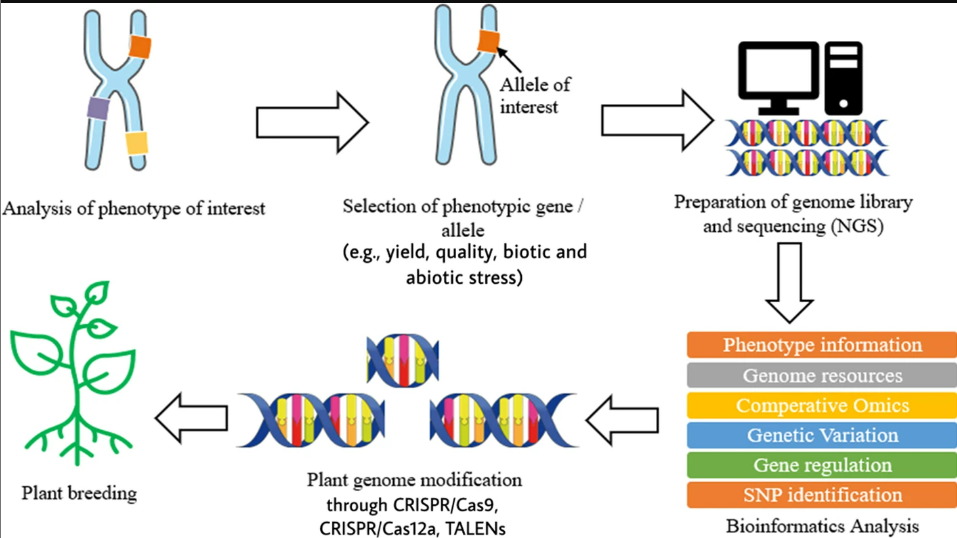

Application to Plant Breeding and Biotechnology
Sai Keertana GubbalaTechnology has changed the structure and future of sectors it has touched to provide a new way of understanding. Even in the field of plant biology and genomics it has sought to provide effective data management, visualization, integration, analysis, modeling and prediction. Bioinformatics is a vast field that organizes and uses the function of biological systems to track changes in plants, combining plants and technology. This can come in the form of identifying plant physiology, pathogen pressure or the environment to provide valuable insights. Take for example how we have long used genomics to further crop yields and trace the evolutionary history of crops. There is only going to be more application of technology in plant sciences, not less to provide a modern approach.

Bioinformatics is a multidisciplinary field that uses subjects that could be seemingly unconnected such as computer science, biology, and statistics to analyze the vast amount of data we accumulate overtime. In plant breeding especially their benefit has been in genomic analysis where it helps the analysis of large-scale genomic data and looking at DNA sequencing data and even look for variations or mutations that occur to track changes. Visualization is also an incredible benefit from the technology that is utilized to make meanigful insights from complex datasets and facilitate good decion making for researchers,scientists and even policymakers.